红韵乡行 · 新媒体作品存档
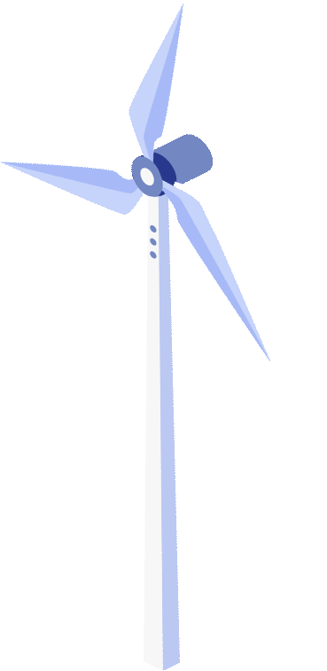
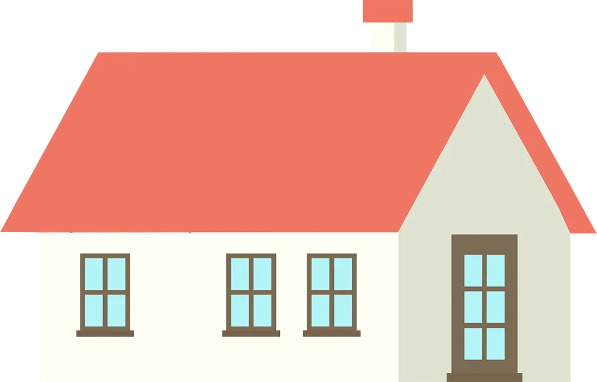
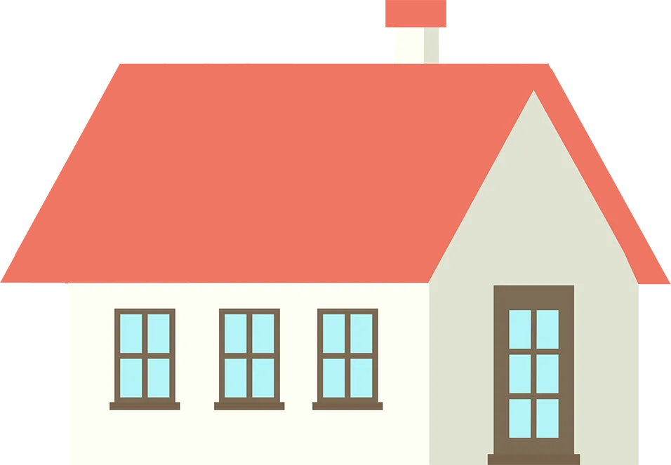
茶香为引
青春下乡
广东外语外贸大学“红韵乡行”实践队
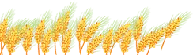
SOCIAL PRECTICE
启程
盛夏启程，脚步向乡。实践队来到清远市龙颈镇，围绕茶产业、康养文旅与联农富农路径展开第一天调研。我们在交流中厘清方向，也在走访中看见龙颈镇产业发展的鲜活脉络。
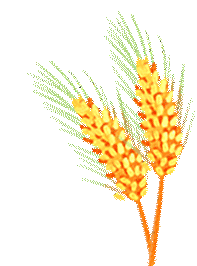
01
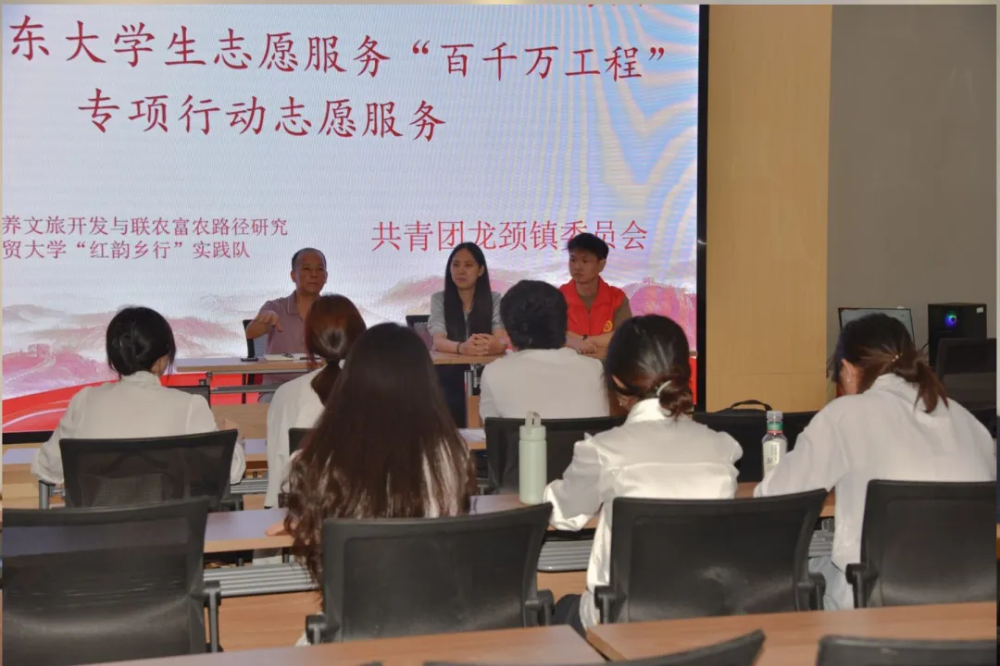
从项目设想到地方实践
上午，我们来到龙颈镇政府，与镇里的工作人员进行对接。队员们介绍了接下来希望在尚品得茗产业园开展的康养项目，也把关于茶园体验、研学路线和文旅融合的一些初步想法带到了交流桌上。
随后，团队与农办及文旅相关工作人员深入交流，了解本地茶产业种植情况、农作物品种结构、农户与政府的合作模式，以及当地文旅开发现状。通过一手信息的梳理，队员们对“茶产业+文旅”的已有成果有了更具体的认识。
红韵乡行
02
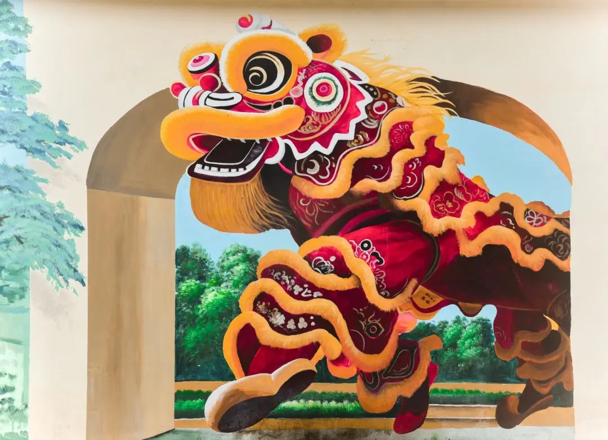
于展陈中领略龙颈底色
离开会议室后，我们走进圩镇客厅。这里像一座小小的窗口，把龙颈镇的历史与地方记忆都摆在眼前，呈现出龙颈镇将资源优势转化为产业成果的探索。
当地瓷产业文化
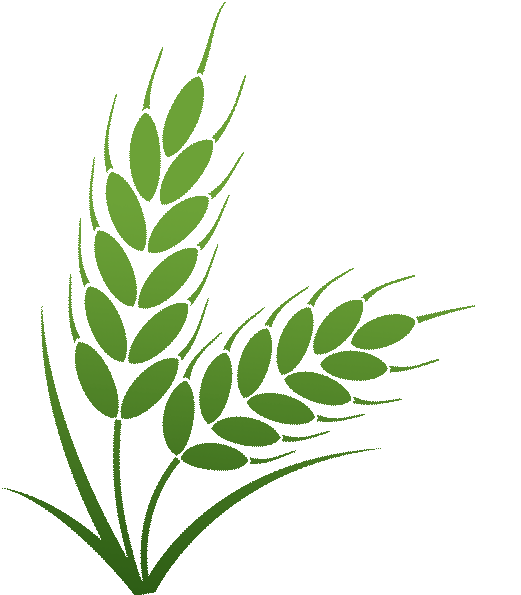
龙颈镇拥有深厚的陶瓷文化底蕴，其中石坎片区被誉为“清远瓷乡”。当地制瓷历史悠久，传统龙窑烧制技艺流传至今，涵盖采泥、制坯、烧制等多个环节，形成了独具特色的地方陶瓷文化。近年来，龙颈镇积极推动陶瓷文化与研学、文创、旅游相结合，通过保护传统技艺、打造陶瓷体验项目，让古老瓷文化焕发新的活力。
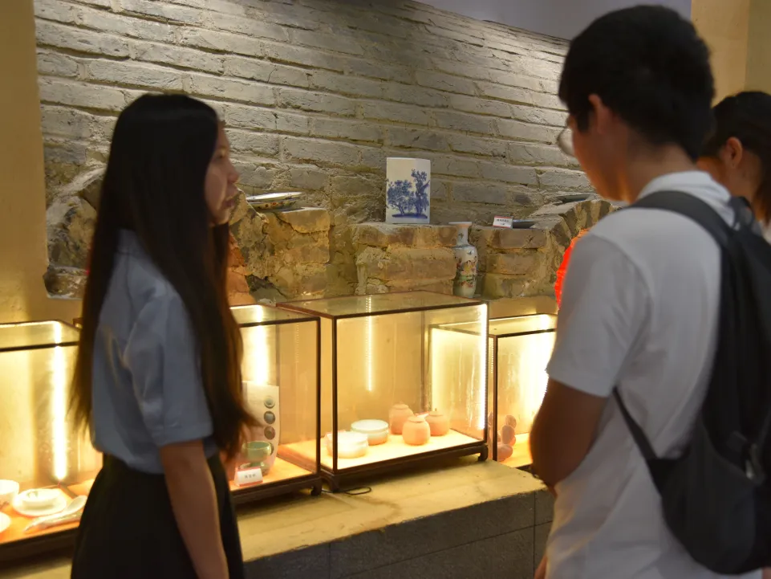
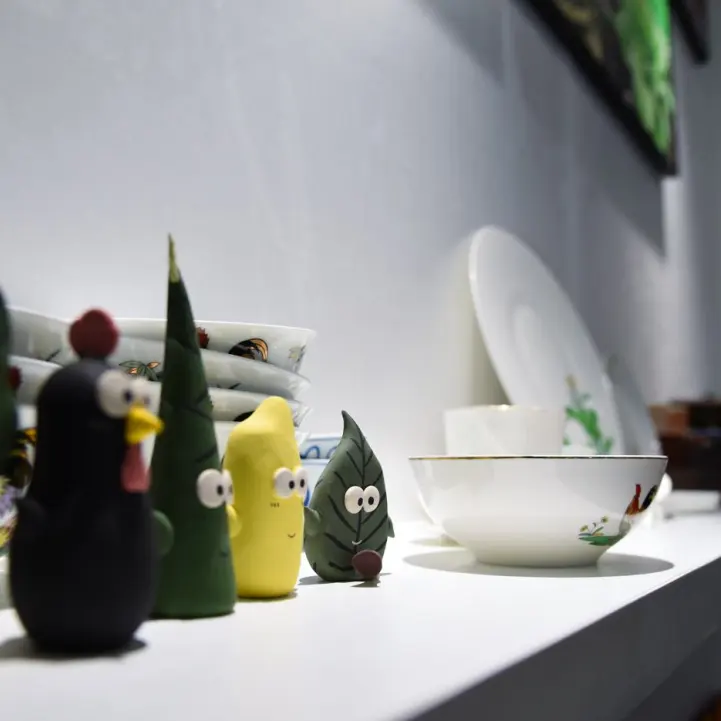
了解当地历史与革命文化
龙颈镇历史文化资源丰富，红色文化底蕴深厚。革命战争时期，这里曾是粤桂湘边纵队开展革命活动的重要区域，留下了相关革命旧址和纪念设施，承载着当地人民英勇奋斗的历史记忆。同时，龙颈镇注重挖掘红色资源，通过开展红色教育、研学活动等方式，传承革命精神，推动历史文化资源转化为乡村发展的重要力量。
03
参观示范性项目
龙颈镇积极发展“民宿+文旅”乡村振兴模式，依托优美的自然环境、传统村落和特色文化资源，打造乡村民宿示范项目。当地通过盘活闲置农房、完善旅游配套设施，引入特色民宿、农家乐、生态体验等业态，吸引游客休闲度假。民宿文旅项目有效带动村民就业增收，促进乡村环境改善，实现文化保护、产业发展与乡村振兴相融合。
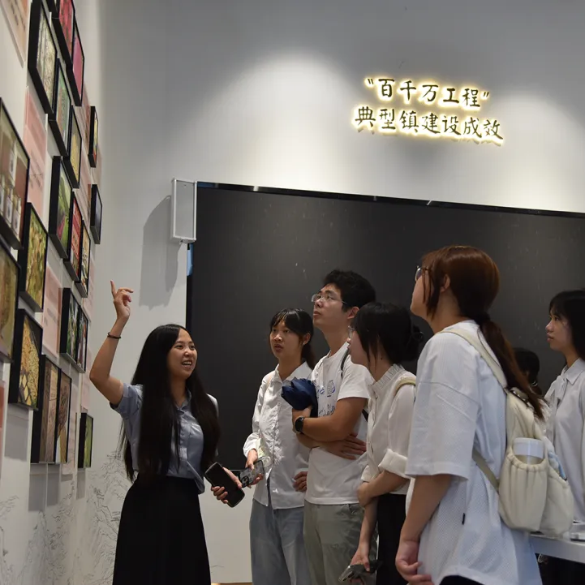
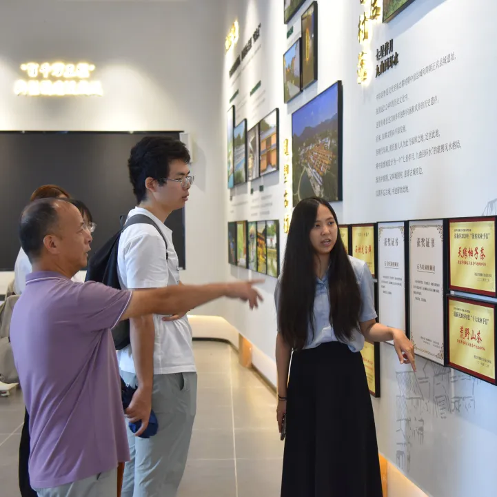
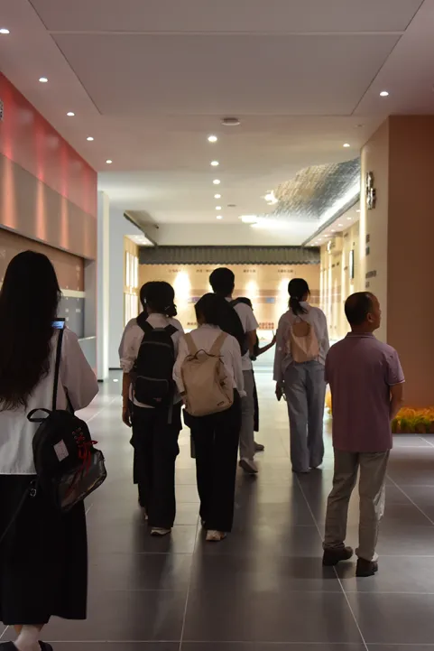
了解当地红色文化与示范性项目
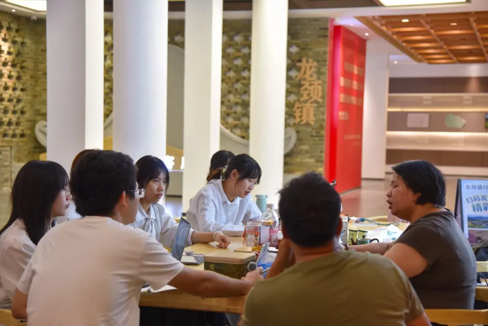
从返乡创业到合作社运行
下午，实践队采访了响应国家政策返乡创业的当地人士，以及当地合作社负责人。围绕稻谷种植模式、合作社运营机制、农户参与方式与市场对接路径，团队获得了关于农业组织化发展的宝贵经验。
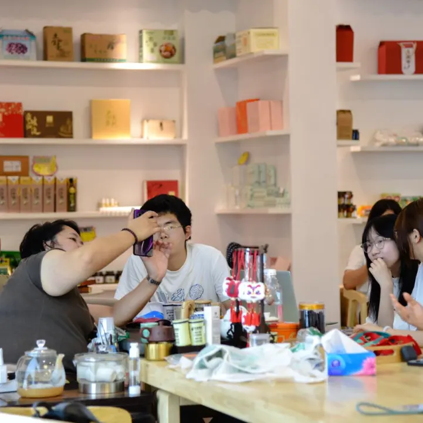
面对面访谈，记录乡村产业发展的真实经验
两位受访者结合自身实践，为大学生研学路线设计提出建议，也为后续茶园经济开发提供了灵感。合作社的运行方式、返乡创业的实践路径与地方产业的联动逻辑，成为团队思考茶园康养项目的重要参考。
总结
把调研写在田野里
从会议室里的项目对接，到圩镇客厅中的历史回望；从茶产品展柜前的观察，到访谈桌边的深入交流，实践队在龙颈镇的第一天收获满满。接下来，团队将继续深入茶园与乡村现场，在调研中完善方案，在实践中回应乡村发展的真实需求。
文字：王辛睿
排版：王辛睿
初审：阿亚拉·赛力别克
终审：杨馥宁
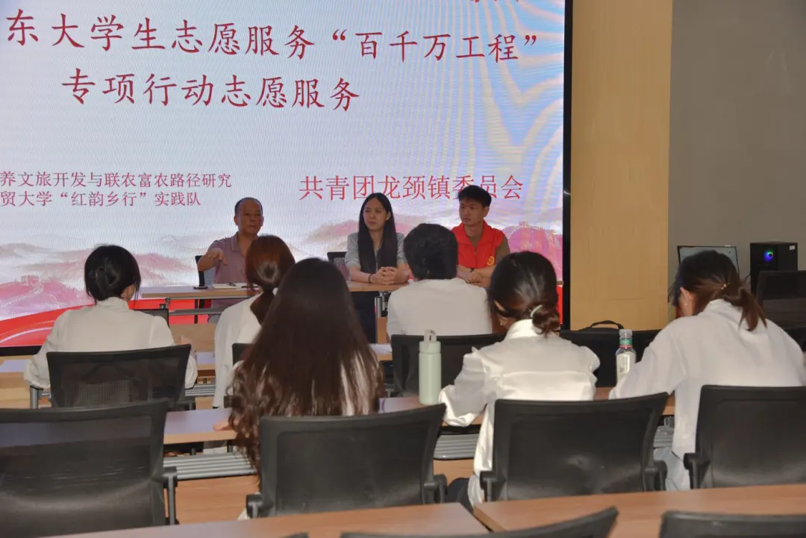